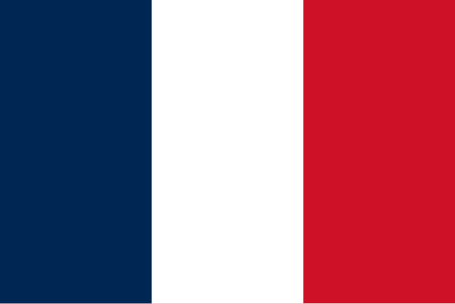
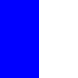
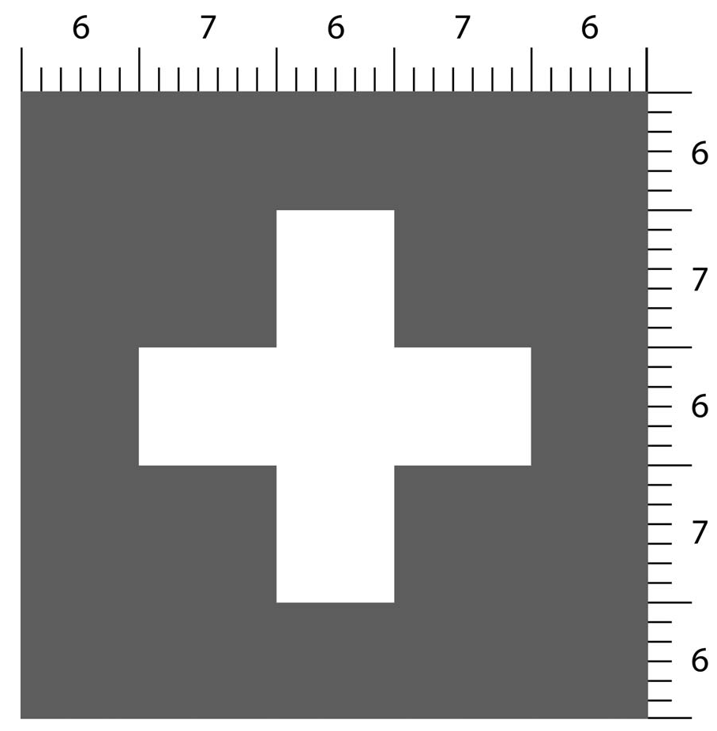
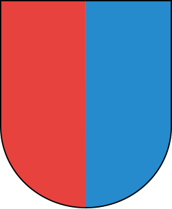

from pytamaro.de import (
rechteck, kreis_sektor,
blau, rot, weiss, schwarz,
neben, ueber, ueberlagere,
drehe, kombiniere,
zeige_grafik, speichere_grafik,
)Problemlösung in der Informatik
Dieses Jupyter Notebook herunterladen
Ausgangslage
Jede Disziplin hat ihre eigene Art, Probleme zu lösen. Das ist in der Informatik nicht anders.
In der Informatik versucht man, grosse Probleme in kleinere Teilprobleme zu zerlegen. Das macht man so lange, bis die Teilprobleme so klein sind, dass sie einfach zu lösen sind.
Dies soll hier anhand von verschidenen Grafiken gezigt werden.
Damit in Python einfach mit Grafiken gearbeitet werden kann, wird das Paket PyTamaro verwendet. Dieses Paket wurde von der Università della Svizzera italiana (USI) extra für die Informatik-Ausbildung entwickelt.
Damit das Paket verwendet werden kann, muss es zuerst in der aktuellen Python Virtual Environment installiert werden.
Dazu öffnen Sie ein Terminal im Ordner, in dem sich dieses Jupyter Notebook befindet. Anschliessend starten Sie die Python Virtual Environment mit dem Befehl:
.venv\Scripts\activateDanach können Sie PyTamaro mit dem Befehl
pip install pytamaroinstallieren.
Um das Paket zu verwenden, muss es importiert werden. Die genauen Zusammenhänge müssen im Moment nicht bekannt sein. Wichtig ist lediglich, dass die folgende Zelle ausgeführt wird.
Beispiel: Tricolore
Die Vorgehensweise wird anhand der Französischen Nationalflagge (Tricolore) gezigt.

Um die Zeichnung der Tricolore zu planen, wird die Grafik in ihre Einzelteile zerlegt.
Die Tricolore besteht aus drei gleich grossen Rechtecken in den Farben blau, rot und weiss. Diese Rechtecke werden nebeneinander angeordnet.
Das bedeutet, dass die Länge und die Breite der Rechtecke definiert werden muss und basierend auf diesen Werten die drei Rechtecke gezeichnet werden. Anschliessend werden die drei Rechtecke nebeneinander angeordnet.
Der Befehl zum Zeichnen eines Rechtecks lautet
name = rechteck(länge, breite, farbe)Bevor die Zeichnung tatsächlich erstellt wird, soll hier der Befehl im Detail erklärt werden:
nameist der Name, unter dem das Rechteck gespeichert wird. Dieser Name kann später verwendet werden, um auf das Rechteck zuzugreifen.rechteckist der Befehl, der ein Rechteck zeichnet. In der Klammer hinter dem Befehl werden die sogenannten Argumente angegeben. Diese steuern, wie das Rechteck aussieht.längeundbreitesind die Argumente, die die Grösse des Rechtecks bestimmen. Diese Werte können beliebig gewählt werden.farbeist das Argument, das die Farbe des Rechtecks bestimmt. Aufgrund der Eigenheiten vonPyTamarokönnen ausschliesslich die Farben verwendet werden, welche importiert worden sind.
Rechtecke zeichnen
Als erstes wird hier gezeigt, wie das blaue Rechteck gezeichnetwird.
Damit das Resultat kontrolliert werden kann, wird die Grafik mit dem Befehl
zeige_grafik(name)angezeigt.
bleu = rechteck(50, 100, blau)
zeige_grafik(bleu)Nachdem das blaue Rechteck gezeichnet wurde, kann das weisse und das rote Rechteck analog gezeichnet und angzeigt werden.
# TODO: Rechtecke blanc und rouge zeichnen -> Schreiben Sie hier Ihren
# Code
blanc = rechteck(50, 100, weiss)
rouge = rechteck(50, 100, rot)Als nächstes werden die drei Rechtecke nebeninander angeordnet. Dazu wird der Befehl neben verwendet. Dieser Befehl nimmt zwei Argumente entgegen: das erste Rechteck und das zweite Rechteck. Das erste Rechteck wird links vom zweiten Rechteck gezeichnet.
resultat = neben(linke grafik, rechte grafik)zwei_drittel = neben(bleu, blanc)
zeige_grafik(zwei_drittel)
Analog können Sie nun das rote Rechteck rechts der zwei Drittel anordnen. Nennen Sie das Resultat tricolore und zeigen Sie es an.
# TODO: Trcolore zusammenfügen -> Schreiben Sie hier Ihren
# CodeBeispiel: Österreichische Flagge
Zeichnen Sie die Österreichische Flagge. Um Elemente übereinander anzuordnen, wird der Befehl ueber verwendet. Die Syntax dieses Befehls lautet:
resultat = ueber(obere grafik, untere grafik)# TODO: Östereichische Flagge zeichnen -> Schreiben Sie hier Ihren
# CodeBeispiel: Schweizerfahne
Zeichnen Sie eine korrekt propotionierte Schweizerfahne. Die Dimensionen können Sie der folgenden Grafik entnehmen:

Verwenden Sie dazu die Befehle rechteck, drehe und ueberlagere.
# TODO: Schweizerfahne zeichnen -> Schreiben Sie hier Ihren
# CodeTessiner Wappen
Als Referenz an die USI zeichnen Sie als letztes Beispiel das Tessiner Wappen.

Verwenden Sie dazu neben den bereits bekannten Befehlen zusätzlich die Befehle ueber und kreis_sektor.
# TODO: Tessiner Wappen zeichnen -> Schreiben Sie hier Ihren
# Code